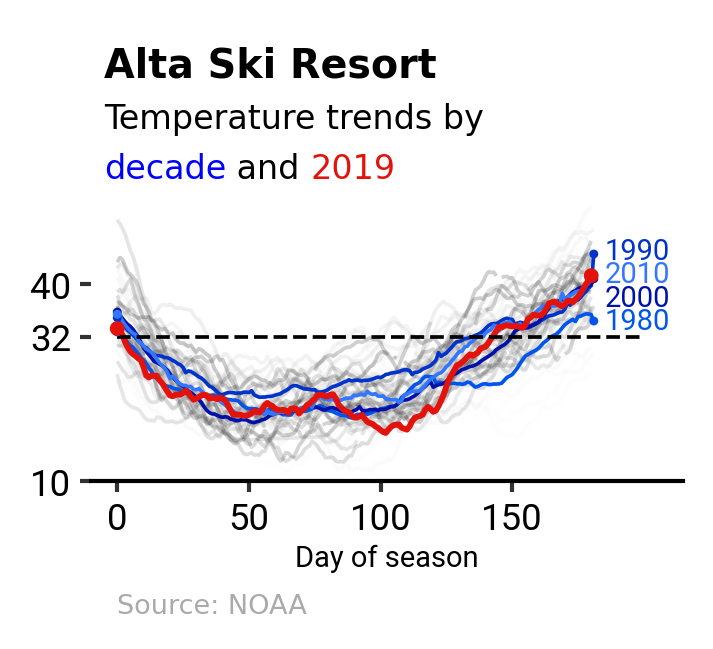

Weekend Challenge – Recreating a Data Visualization with Polars and Plotnine
python
polars
matplotlib
plotnine
Author
Jerry Wu
Published
April 12, 2025
This post is part of a visualization recreation challenge using Polars and plotnine, inspired by my earlier work.
It marks my first serious dive into plotnine—an impressive library with a bit of a learning curve.
I’ll walk through the journey I took to recreate the visualization. Some parts may overlap with the earlier post, but I believe that’s acceptable to keep this one self-contained.
The final figure, shown below, visualizes temperature trends for the ski season in Alta over the past few decades. 
Below is the data pipeline used to generate the DataFrame for the upcoming visualization stage:
data_path ="alta-noaa-1980-2019.csv"columns = ["DATE", "TOBS"]idx_colname ="DAY_OF_SEASON"temp_colname ="temp"def tweak_df(data_path: str, columns: list[str], idx_colname: str="DAY_OF_SEASON"):return ( pl.scan_csv(data_path)1 .select(columns) .with_columns(2 pl.col("DATE").str.to_datetime(),3 pl.col("TOBS").interpolate(), ) .sort("DATE") .with_columns(# Caveat: Cannot be placed in the previous `with_columns()`# due to different statuses of `TOBS`.4 pl.col("TOBS").rolling_mean(window_size=28, center=True).alias("TMEAN"),5 get_season_expr(col="DATE", alias="SEASON"), ) .with_columns(6 add_day_of_season_expr(col="DATE", group_col="SEASON", alias=idx_colname) ) .collect() )
1
Select the DATE column (dates) and TOBS column (recorded temperatures in Fahrenheit).
2
Convert the DATE column to a datetime format.
3
Perform interpolation on the TOBS column.
4
Compute a 28-day rolling average for TOBS.
5
Use get_season_expr() to categorize each date into a SEASON.
6
Apply add_day_of_season_expr() to calculate DAY_OF_SEASON, representing days elapsed since the start of the season.
The first three steps involve straightforward Polars expressions. In the following two sub-sections, we’ll dive deeper into steps 5 and 6.
Categorizing Dates into Summer and Ski Seasons
To analyze seasonal trends, we classify dates into two categories:
Summer: Covers May through October.
Ski: Covers November through April.
If a date falls in November or December, it is assigned to the following year’s season. For example, 2015-10-31 is categorized as Summer 2015, while 2015-11-01 belongs to Ski 2016.
To implement this logic, we define get_season_expr(), which leverages Polars’ when-then-otherwise expressions to determine the season and year.
If the month is between May and October, the function assigns "Summer ". Otherwise, it assigns "Ski " (with a trailing space for concatenation).
The year is determined based on the month: dates from January to October retain their current year, while those in November and December are shifted to the next year.
By applying this function, we can add a SEASON column to a DataFrame, ensuring each date is categorized correctly.
Calculating the Total Days for Each Season
Once we have the seasonal categories, we calculate DAY_OF_SEASON, which tracks the number of days elapsed within each season. This is achieved using the pl.expr.over() expression, which operates similarly to Pandas’ groupby().transform(), applying transformations within groups.
With the data prepared, we now turn our focus to visualization. The plot_temps() function is relatively long, so we’ll walk through it step by step. Ultimately, we’ll construct several intermediate DataFrames and use them to build a ggplot object for rendering.
Reshaping the Main DataFrame
We begin by filtering the dataset to include only rows corresponding to Ski seasons. Then, using pl.DataFrame.pivot() and pl.DataFrame.unpivot(), we reshape the main DataFrame.
To reveal long-term patterns, we compute average temperature trends by decade. Each decade will be represented by a separate line with a distinct color.
To enhance readability, we annotate each decade line in two ways: by marking the start and end points and by adding labels to the line endings. For this purpose, we create two separate DataFrames.
For the title, we use ax_text() from the HighlightText library. It allows inline text highlighting using < >, letting us emphasize specific parts of the title like <Alta Ski Resort>, <Temperature trends by >, <decade>, < and >, and <2019> with customized styles.
To add a source note, we simply use Matplotlib’s ax.text():
Now we put everything together and render the final plot. A key trick here is retrieving the ax object using fig.axes[0], which allows us to apply both HighlightText and regular Matplotlib functions.
Wrapping up this post, I’ve come to appreciate how powerful the plotnine library truly is. While its aesthetic system requires a bit of mental shift, it offers a clean, expressive way to build layered visualizations.
One key takeaway for me is that each layer can operate on its own dataset, which adds a lot of flexibility. What I enjoyed most, though, is the theme system—it makes it easy to define a consistent visual style that can be reused across different plots.
One limitation I ran into was the lack of a plotnine-native alternative to pli.subplot_mosaic(). This feature allows for more granular layout control—for example, dividing the figure into separate axes with custom height ratios for the title, main plot, and source note using gridspec_kw={"height_ratios": [6, 12, 1]}.
Disclaimer
This post was drafted by me, with AI assistance to refine the content.